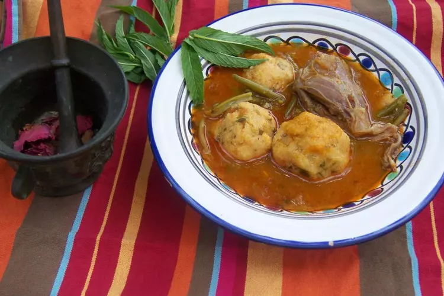

Tikourbabine

Description
Tikourbabine, taεaṣbant (en kabyle tasahlite), ou العَصْبَانْ (al-'aṣbān, en arabe bédjaoui et en arabe djidjelien),
est un plat traditionnel berbère algérien.
Origine et étymologie
Ce plat est originaire de Kabylie1 en Algérie, dans l'aire comprise entre la vallée de la Soummam (Béjaïa) et la
Kabylie de Collo, en passant par le nord des wilaya de Bordj Bou Arreridj et Sétif, la Wilaya de Béjaïa ainsi que
la Wilaya de Jijel (Kabylie orientale), aire connue par le nom générique de Petite Kabylie.
Étymologie : Tikurbabin n f pl, Takurbabt n f sg : « boule » en kabyle.
Ingredients
Pour la sauce :
- 3 carottes
- 2 oignons
- 250 g de haricots verts surgelés
- 3 courgettes
- 1 gros bouquet de coriandre fraîche
- 6 bons morceaux d'agneau (jeune) type collier par exemple
- 1 cuillère à soupe d'huile d'olive
- 1 verre entier de purée de tomate
- 1/4 cuillère à café de raz el hanout (épices mélangées)
- 1/4 cuillère à café de paprika doux
- sel et poivre
Pour les boulettes de semoule :
- 500 g de semoule moyenne
- 1 très gros bouquet de menthe fraîche
- 1 petit bouquet de coriandre fraîche
- 2 oignons
- 1 petit verre d'huile d'olive
- 1 œuf
- 1/4 cuillère à café de sel
- 1/2 cuillère à café de paprika doux
- 1/2 verre de purée de tomate
- 1 tomate fraîche
Préparation
- La sauce. Dans un faitout, hacher les oignons. Couper les carottes en morceaux moyens (en deux dans le sens de
la longueur puis en trois dans le sens de la largeur). Dégraisser l'agneau et l'ajouter aux légumes du faitout.
Faire revenir le tout quelques minutes avec l'huile d'olive. Ajouter les épices et le sel ainsi que la purée de
tomate. Ajouter de l'eau en couvrant largement la viande. Attention mettre assez d'eau car les boulettes cuiront
dans cette sauce. Remuer le tout et porter à ébullition. Ensuite laisser cuire à feu doux.
- Les boulettes. Immédiatement après, préparer les boulettes de semoule qui seront intégrées dans la sauce et cuiront
avec les légumes et la viande. Dans un très grand plat large de préférence, y déposer la semoule. Verser l'huile d'olive
et mélanger avec les mains jusqu'à l'imprégnation totale de l'huile. Ensuite mettre les oignons hachés, la tomate fraîche
hachée ainsi que la menthe et la coriandre finement ciselées. Mélanger le tout à la main. Ajouter ensuite la purée de tomate,
l'œuf entier, le paprika et le sel. Mélanger le tout à nouveau. Ce mélange n'est pas compact dans un premier temps.
Afin de nous permettre de constituer des boulettes qui se tiennent dans la main, ni trop dures, ni trop molles, nous
allons tremper la semoule avec le bouillon de légumes à l'aide d'une louche. Verser le contenu d'une louche dans la
semoule et mélanger le tout à la main. Tout est question de texture. Ajouter une autre louche si nécessaire.
Façonner des boulettes moyennes et les déposer dans le faitout afin qu'elles cuisent avec la viande et les légumes.
- A 10 minutes environ de la fin de la cuisson, ajouter les haricots verts ainsi que les courgettes coupées en morceaux moyens.
Ajouter la moitié de la coriandre fraîche. A la fin de la cuisson, ajouter le reste de coriandre et vérifier l'assaisonnement.